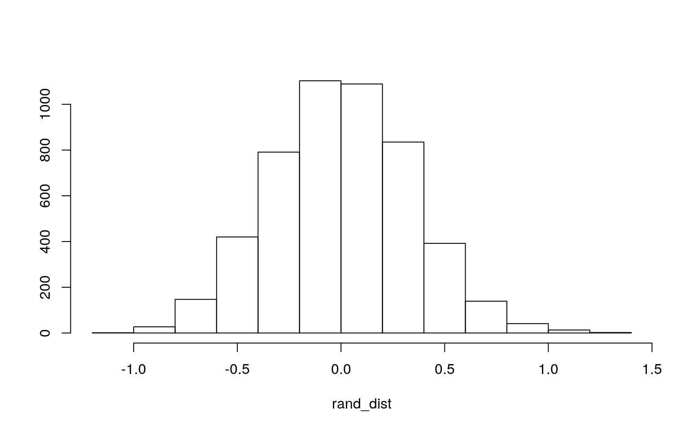
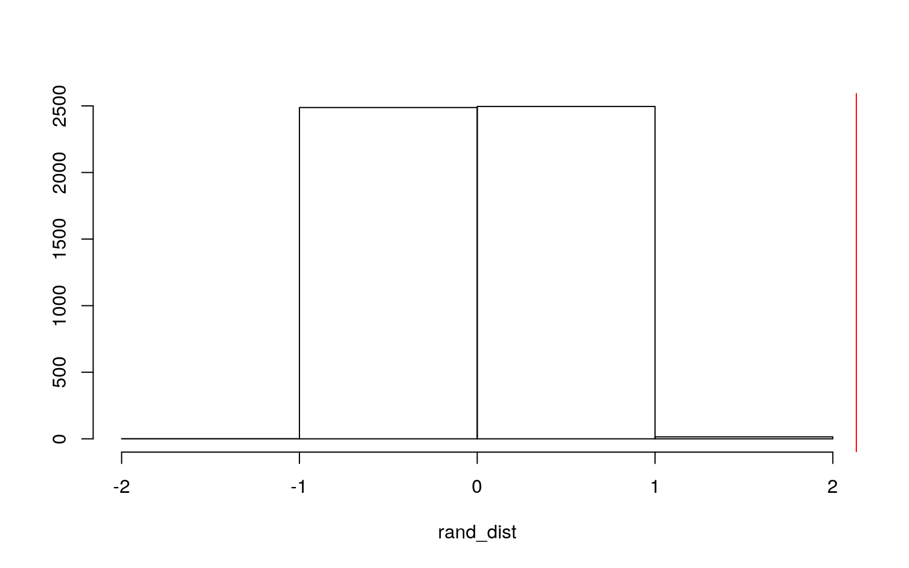
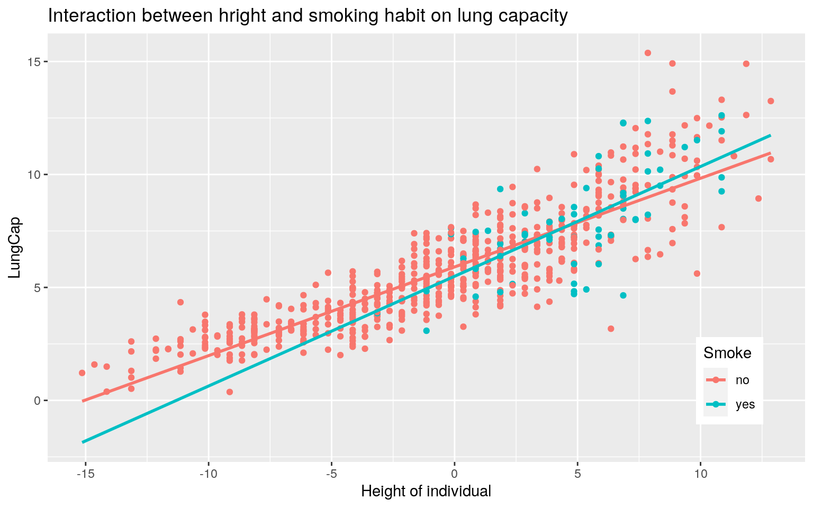
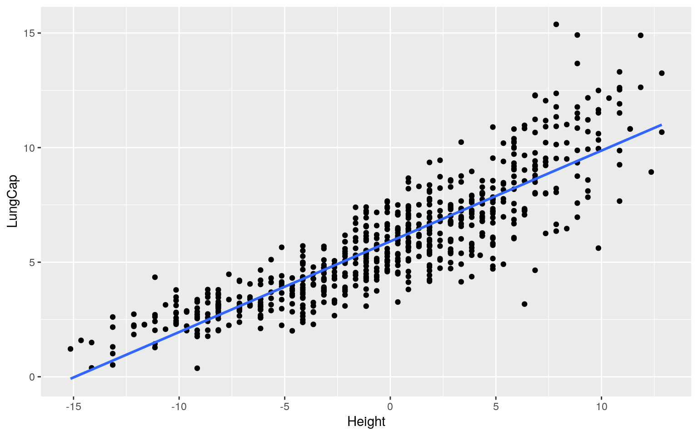
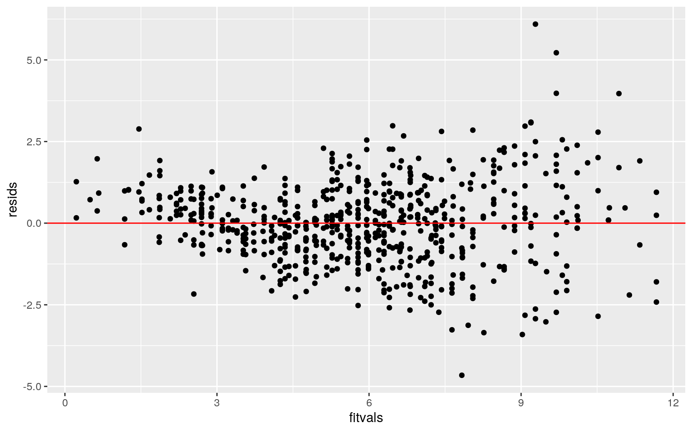
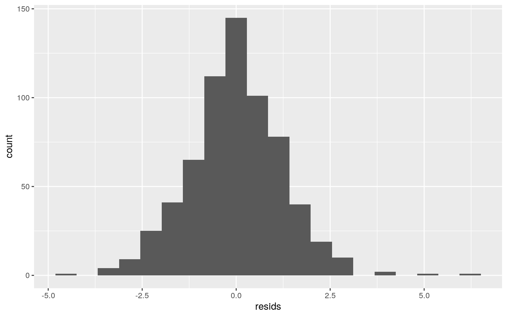
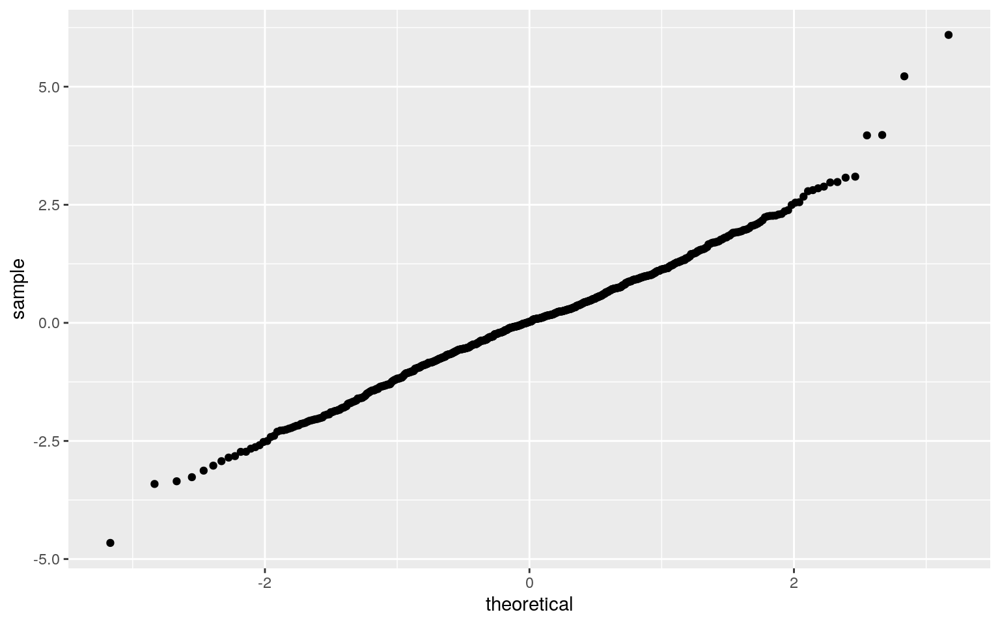
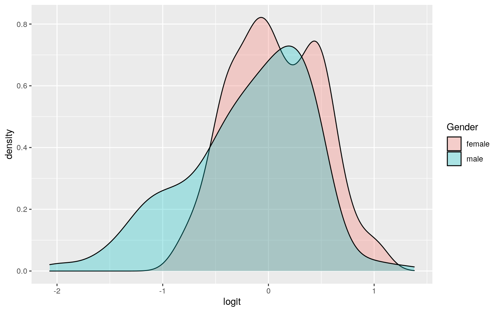
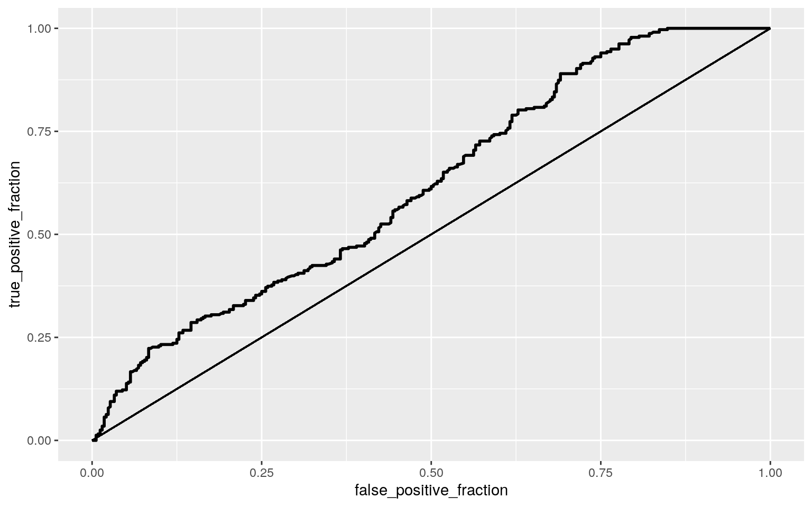

The LungCapData dataset shows the Lungcapacity of individuals of smokers and nonsmokers. There are various variables in this dataset like Age, LungCap, Height, Gender and Smoke. The Age is a categorical variable that shows the age of the person filled in the observation. The Height shows how tall in length of inchs the person observed is; it is a numeric variable. The Gender shows wheter the person observed is male or female, a categorical variable. The Lung Capacity in mmHG shows the maximum amount of air that can be held in the lungs, a numeric variable. The Smoke variable is categorical that shows if those observe smoke or do not smoke reguarly; yes meaning the observation person does smoke. I want to test the effect of smoking on lungcapacity as well as the effect of gender on the likelyhood to smpke. I want to test various factors like that. I chose this dataset, because I just finished learning amount the physiology of the lungs and what to see if I can apply my knowledge in this. The dataset contains 654 observations with 5 variables.
library(lmtest)
library(sandwich)
library(plotROC)
library(tidyverse)
library(MASS)
library(glmnet)
library(ggplot2)
LungCapData <- read_csv("LungCapData2.csv")
manova<-manova(cbind(Age, LungCap, Height)~Gender, data = LungCapData)
summary(manova)## Df Pillai approx F num Df den Df Pr(>F)
## Gender 1 0.083768 19.809 3 650 2.688e-12 ***
## Residuals 652
## ---
## Signif. codes: 0 '***' 0.001 '**' 0.01 '*' 0.05 '.' 0.1
' ' 1The Manova shows the effect of gender on age, lung capacity,and height. It showed a significant difference were found of each element level, p <0.001.
summary.aov(manova)## Response Age :
## Df Sum Sq Mean Sq F value Pr(>F)
## Gender 1 4.8 4.8397 0.5543 0.4568
## Residuals 652 5693.1 8.7317
##
## Response LungCap :
## Df Sum Sq Mean Sq F value Pr(>F)
## Gender 1 191.9 191.916 29.607 7.496e-08 ***
## Residuals 652 4226.4 6.482
## ---
## Signif. codes: 0 '***' 0.001 '**' 0.01 '*' 0.05 '.' 0.1
' ' 1
##
## Response Height :
## Df Sum Sq Mean Sq F value Pr(>F)
## Gender 1 537.2 537.22 16.917 4.405e-05 ***
## Residuals 652 20704.9 31.76
## ---
## Signif. codes: 0 '***' 0.001 '**' 0.01 '*' 0.05 '.' 0.1
' ' 1The ANOVA for the dependent variables were done to follow the MANOVA test. The univariate ANOVA for the stats tested of the lung capacity and height were significantly different by gender. Age was not signifcanlty different by gender.
pairwise.t.test(LungCapData$Age, LungCapData$Gender, p.adj="none")##
## Pairwise comparisons using t tests with pooled SD
##
## data: LungCapData$Age and LungCapData$Gender
##
## female
## male 0.46
##
## P value adjustment method: nonepairwise.t.test(LungCapData$LungCap, LungCapData$Gender, p.adj="none")##
## Pairwise comparisons using t tests with pooled SD
##
## data: LungCapData$LungCap and LungCapData$Gender
##
## female
## male 7.5e-08
##
## P value adjustment method: nonepairwise.t.test(LungCapData$Height, LungCapData$Gender, p.adj="none")##
## Pairwise comparisons using t tests with pooled SD
##
## data: LungCapData$Height and LungCapData$Gender
##
## female
## male 4.4e-05
##
## P value adjustment method: noneThe post hoc analysis was done by using pairwise comparison to see which gender differed in each variable that was tested. When looking at the age of the observed, male and female do not differ significantly. When looking at Lung Capacity and Height, male and female do differ significantly.
#Probability of Type-1 Error
1-(1-0.05)^7## [1] 0.3016627#bonf correction
0.05/7## [1] 0.007142857There were 7 different hypothesis conducted so probablity of Type-1 Error is 0.3016627. Bonferroni correction was used to adjust the significnae level to 0.007142857.
pairwise.t.test(LungCapData$Age, LungCapData$Gender, p.adj="bonf")##
## Pairwise comparisons using t tests with pooled SD
##
## data: LungCapData$Age and LungCapData$Gender
##
## female
## male 0.46
##
## P value adjustment method: bonferronipairwise.t.test(LungCapData$LungCap, LungCapData$Gender, p.adj="bonf")##
## Pairwise comparisons using t tests with pooled SD
##
## data: LungCapData$LungCap and LungCapData$Gender
##
## female
## male 7.5e-08
##
## P value adjustment method: bonferronipairwise.t.test(LungCapData$Height, LungCapData$Gender, p.adj="bonf")##
## Pairwise comparisons using t tests with pooled SD
##
## data: LungCapData$Height and LungCapData$Gender
##
## female
## male 4.4e-05
##
## P value adjustment method: bonferroniAfter adjusting for the significance value, the mean difference between males and females are still significant for lung capacity and height, but not for age.
The ANOVA was probably met, because of the assumptions like random sampling, indpendent observations, etc. exist when the data was collected. The MANOVA test proably did not meet the assumptions du to the need of homogenity, no multicollinerity, no extreme outliers, etc. A data set like this would be hard to meet these assumptions and the data would need to be controlled more.
#Hypothesis below...Null Hypothesis (Ho): The mean lung capacity is the same for nonsmokers and smokers Alternative Hypothesis (Ha):The mean lung capacity is different for nonsmokers and smokers
mean_diff <- mean(LungCapData[LungCapData$Smoke=="yes",]$LungCap)-mean(LungCapData[LungCapData$Smoke=="no",]$LungCap)
#permutation loop
rand_dist<-vector()
for(i in 1:5000){
new<-data.frame(LungCap=sample(LungCapData$LungCap),Smoke=LungCapData$Smoke)
rand_dist[i]<-mean(new[new$Smoke=="yes",]$LungCap)- mean(new[new$Smoke=="no",]$LungCap)}
#P value of permutation test
mean(rand_dist>mean_diff)*2## [1] 0#Independent t-test
t.test(data=LungCapData,LungCap~Smoke)##
## Welch Two Sample t-test
##
## data: LungCap by Smoke
## t = -7.1496, df = 83.273, p-value = 3.074e-10
## alternative hypothesis: true difference in means is not
equal to 0
## 95 percent confidence interval:
## -2.725276 -1.539038
## sample estimates:
## mean in group no mean in group yes
## 5.698428 7.830585The p-value from the randomization test is less than 0.05 of alpha, so we can reject the null hypothesis and state that the mean lung capacity is different for nonsmokers and smokers of those sampled. This was used for the independent t-test, but the randomization shows data that is verified.
{hist(rand_dist,main="",ylab=""); abline(v = mean_diff,col="red")}
{hist(rand_dist,main="",ylab="",breaks=2); abline(v = mean_diff,col="red")} Both graphs show the same distribution, but breaks was added to the second histogram to show the test static.
3. (35 pts) Build a linear regression model predicting one of your response variables from at least 2 other variables, including their interaction. Mean-center any numeric variables involved in the interaction.
ggplot() using geom_smooth(method="lm"). If your interaction is numeric by numeric, refer to code in the slides to make the plot or check out the interactions package, which makes this easier. If you have 3 or more predictors, just chose two of them to plot for convenience. (8)coeftest(..., vcov=vcovHC(...)). Discuss significance of results, including any changes from before/after robust SEs if applicable. (8)#Mean-Centering Numeric Variables
LungCapData-> LungCapData_c
LungCapData_c$Height <- LungCapData_c$Height - mean(LungCapData_c$Height, na.rm = T)
fit1<-lm(LungCap ~ Gender * Smoke * Height, data = LungCapData_c)
summary(fit1)##
## Call:
## lm(formula = LungCap ~ Gender * Smoke * Height, data =
LungCapData_c)
##
## Residuals:
## Min 1Q Median 3Q Max
## -4.6587 -0.7521 0.0213 0.7456 6.0960
##
## Coefficients:
## Estimate Std. Error t value Pr(>|t|)
## (Intercept) 5.66235 0.07882 71.838 < 2e-16 ***
## Gendermale 0.38608 0.10624 3.634 0.000301 ***
## Smokeyes 0.76240 0.37108 2.055 0.040324 *
## Height 0.34112 0.01585 21.526 < 2e-16 ***
## Gendermale:Smokeyes -1.86029 0.70000 -2.658 0.008066 **
## Gendermale:Height 0.07059 0.01950 3.620 0.000318 ***
## Smokeyes:Height -0.20229 0.09007 -2.246 0.025048 *
## Gendermale:Smokeyes:Height 0.40948 0.11935 3.431
0.000640 ***
## ---
## Signif. codes: 0 '***' 0.001 '**' 0.01 '*' 0.05 '.' 0.1
' ' 1
##
## Residual standard error: 1.252 on 646 degrees of freedom
## Multiple R-squared: 0.7708, Adjusted R-squared: 0.7683
## F-statistic: 310.4 on 7 and 646 DF, p-value: < 2.2e-16The intercept estimate is 5.66235, which the average lung capacity when no interaction between gender and whether or not the observed smoke. The coefficent estimate of gender is 0.38608 which is how much the lung capacity increases, mmHG, when the gender is male. The coefficient of smoke, 0.76240, is how much the average lung capacity increases when the individual does smoke. The coefficient estimate for height of indivudals, 0.34112, shows how much the avergae lung capacity ubcrease for every increase in 1 inch.
The coefficient Gendermale:Smokeyes is -1.86029 is how much the average lung capacity will change if the indivual is male who smokes (said yes to smoking). Gendermale:Height is 0.07059 is how much average lung capacity will change if individual is male and every increase in 1 inch of height. The coefficient of Smokeyes:Height is -0.20229 is how much average lung capacity will change if the individual smokes and every increase in 1 inch of height.The cofficiebt of Gendermale:Smokeyes:Height is 0.40948 which is how much the average lung capacity will change for every increase in 1 inch of height, if the individual is male, and if the indivudal smokes.
ggplot(LungCapData_c, aes(x=Height, y=LungCap, group=Smoke))+geom_point(aes(color=Smoke))+
geom_smooth(method="lm",se=F,fullrange=T,aes(color=Smoke))+theme(legend.position=c(.9,.19))+xlab("Height of individual")+ggtitle("Interaction between hright and smoking habit on lung capacity")
resids<-fit1$residuals
fitvals<-fit1$fitted.values
#Linearity
ggplot(LungCapData_c, aes(x=Height, y=LungCap)) + geom_point() + geom_smooth(method = "lm", se=F)
#Homoskedasticity
ggplot()+geom_point(aes(fitvals,resids))+geom_hline(yintercept=0, color='red')
#Homoskedasticity of Breuch-Pagan Test
bptest(fit1)##
## studentized Breusch-Pagan test
##
## data: fit1
## BP = 70.352, df = 7, p-value = 1.254e-12#Normality
ggplot()+geom_histogram(aes(resids), bins=20)
ggplot()+geom_qq(aes(sample=resids))+geom_qq_line()
#Normality from Shapiro-Wilk Test
shapiro.test(resids)##
## Shapiro-Wilk normality test
##
## data: resids
## W = 0.98868, p-value = 6.107e-05The numeric variable, Height, does seem to have a linera relationship according to the graph and the other two variables are also linear, but are categorical (not important). The Bech-Pagan test, we have to rejec the null hypothesis of homoskedasticity because the pvalue shows significance. The Shaprio_wilk Test null hypothesis is also rejected becuase the test was also significant. The assumptions of linearity seemed to met, but the assumtpions for homoskedasticity and normality were not met.
#Heteroskedasticity Robust Standard Errors
coeftest(fit1, vcov = vcovHC(fit1))##
## t test of coefficients:
##
## Estimate Std. Error t value Pr(>|t|)
## (Intercept) 5.662347 0.073247 77.3044 < 2.2e-16 ***
## Gendermale 0.386084 0.105390 3.6634 0.0002693 ***
## Smokeyes 0.762400 0.399937 1.9063 0.0570551 .
## Height 0.341121 0.014070 24.2452 < 2.2e-16 ***
## Gendermale:Smokeyes -1.860294 0.928320 -2.0039 0.0454939
*
## Gendermale:Height 0.070589 0.019798 3.5655 0.0003900 ***
## Smokeyes:Height -0.202289 0.107348 -1.8844 0.0599575 .
## Gendermale:Smokeyes:Height 0.409480 0.147930 2.7681
0.0058008 **
## ---
## Signif. codes: 0 '***' 0.001 '**' 0.01 '*' 0.05 '.' 0.1
' ' 1Since the data did not meet the assumptions, except for linearity, the regression for heteroskadisicty robust standard errors was done. The t-value seem to change a little and the pvalues become more significance. Everything else seems to be simliar
summary(fit1)##
## Call:
## lm(formula = LungCap ~ Gender * Smoke * Height, data =
LungCapData_c)
##
## Residuals:
## Min 1Q Median 3Q Max
## -4.6587 -0.7521 0.0213 0.7456 6.0960
##
## Coefficients:
## Estimate Std. Error t value Pr(>|t|)
## (Intercept) 5.66235 0.07882 71.838 < 2e-16 ***
## Gendermale 0.38608 0.10624 3.634 0.000301 ***
## Smokeyes 0.76240 0.37108 2.055 0.040324 *
## Height 0.34112 0.01585 21.526 < 2e-16 ***
## Gendermale:Smokeyes -1.86029 0.70000 -2.658 0.008066 **
## Gendermale:Height 0.07059 0.01950 3.620 0.000318 ***
## Smokeyes:Height -0.20229 0.09007 -2.246 0.025048 *
## Gendermale:Smokeyes:Height 0.40948 0.11935 3.431
0.000640 ***
## ---
## Signif. codes: 0 '***' 0.001 '**' 0.01 '*' 0.05 '.' 0.1
' ' 1
##
## Residual standard error: 1.252 on 646 degrees of freedom
## Multiple R-squared: 0.7708, Adjusted R-squared: 0.7683
## F-statistic: 310.4 on 7 and 646 DF, p-value: < 2.2e-16The R^2 shows the proportion of variation in lung capcity explained by the model is 0.7708. The R^2 shows the proportion of variation in lung capacity shown my the model and it is simliar, 0.7683.
#Bootstrapped SE
samp_distn<-replicate(5000, {
boot_dat<-boot_dat<-LungCapData_c[sample(nrow(LungCapData_c),replace=TRUE),]
fit2<-lm(LungCap ~ Gender * Smoke * Height, data=boot_dat)
coef(fit2)
})
samp_distn%>%t%>%as.data.frame%>%summarize_all(sd)## (Intercept) Gendermale Smokeyes Height
Gendermale:Smokeyes Gendermale:Height Smokeyes:Height
## 1 0.07259788 0.1045836 0.3759693 0.01374428 1.016646
0.01947538 0.09993065
## Gendermale:Smokeyes:Height
## 1 0.1498738#Bootstrapped SE (Resampling/Residuals)
fit2<-lm(LungCap ~ Gender * Smoke * Height, data = LungCapData_c)
resids<-fit2$residuals
fitted<-fit2$fitted.values
resid_resamp<-replicate(5000,{
new_resids<-sample(resids,replace=TRUE)
LungCapData_c$new_y<-fitted+new_resids
fit2<-lm(LungCap ~ Gender * Smoke * Height, data = LungCapData_c)
coef(fit2)
})
resid_resamp%>%t%>%as.data.frame%>%summarize_all(sd)## (Intercept) Gendermale Smokeyes Height
Gendermale:Smokeyes Gendermale:Height Smokeyes:Height
## 1 0 0 0 0 0 0 0
## Gendermale:Smokeyes:Height
## 1 0The data was rerun using the bootstrapped standard errors, because it was non-normal. The bootstrp standrd error using the row resmapling were lower than the robust heteroskedatic errors and the orignal standard error. The bootstrapped standard error using the residual sampling were the same to the boot strapped stanrd error using the row sampling. The residual sampling stnadrd erros and the standard error of some variables were smaller than some of the heteroskedatic standrd errors adn normal SE. Residual resampling will be use to show the error.
5. (25 pts) Fit a logistic regression model predicting a binary variable (if you don't have one, make/get one) from at least two explanatory variables (interaction not necessary).
LungCapData_c<-LungCapData_c%>%mutate(y=as.numeric(Gender=="female"))
#Logistic Regression
fit3 <- glm(y ~ LungCap + Smoke, data = LungCapData_c, family = binomial(link="logit"))
coeftest(fit3)##
## z test of coefficients:
##
## Estimate Std. Error z value Pr(>|z|)
## (Intercept) 1.028511 0.209595 4.9071 9.242e-07 ***
## LungCap -0.201388 0.034583 -5.8233 5.768e-09 ***
## Smokeyes 0.971643 0.285646 3.4016 0.00067 ***
## ---
## Signif. codes: 0 '***' 0.001 '**' 0.01 '*' 0.05 '.' 0.1
' ' 1exp(-0.201388)## [1] 0.8175951exp(0.971643)## [1] 2.642282When controlling for smoking,there is a signficant effect of lung capacity on the gender of the individual. Every gain in 1 mmhG of lungcapacity mutliples the odds of beinfs a female by 0.8175951. Controlling for lung capacity, there is a signficant effect of yes to smoker on the gender of the individual. This is effect is almost by 2.642282 odds of beings a female if smoked yes.
#Confusion Matrix
LungCapData_c$prob<-predict(fit3,type="response")
table(predict=as.numeric(LungCapData_c$prob>.5),truth=LungCapData_c$y)%>%addmargins## truth
## predict 0 1 Sum
## 0 187 144 331
## 1 149 174 323
## Sum 336 318 654#Accuracy
(187+174)/654## [1] 0.5519878#Sensitivity
174/318## [1] 0.5471698#Specificity
187/336## [1] 0.5565476#Precision
174/323## [1] 0.5386997The accurary shows the number of predicted males who are actually male is 0.551878. The sensitivity or the position rate is 0.5471698, meaning that there are predicted females for around half the time. The specificity or tru nehative rate is simliar but it is 0.5565476. This shows because it includes both genders. The precision or portion of predicted demale who are acutally femlae is 0.5386997.
#Density of Log-Odds Plot
LungCapData_c$odds<-(LungCapData_c$prob)/(1-LungCapData_c$prob)
LungCapData_c$logit<-log(LungCapData_c$odds)
ggplot(LungCapData_c)+geom_density(aes(logit, fill=Gender), alpha=0.3)
#ROC Curve and AUC
ROCplot <- ggplot(LungCapData_c) + geom_roc(aes(d = y, m = prob),n.cuts = 0) + geom_segment(aes(x = 0, xend = 1, y = 0, yend = 1))
ROCplot
calc_auc(ROCplot)## PANEL group AUC
## 1 1 -1 0.6174004The AUC of the model is 0.6174004 showing that the probability of chosing a male with a higher prediciotn than a female, while taking account of the lung capacity and wheter of not they smoke. This is a fairly poor AUC, meaning that lung capacity and whether or not the individual smokes is a poor predicator of gender.
6. (25 pts) Perform a logistic regression predicting the same binary response variable from ALL of the rest of your variables (the more, the better!)
lambda.1se). Discuss which variables are retained. (5)LungCapData_c<-LungCapData_c%>%mutate(y=as.numeric(Gender=="female"))
#Logistic Regression
fit4 <- glm(y ~ LungCap + Smoke + Height + Age, data = LungCapData_c, family = binomial(link="logit"))
coeftest(fit4)##
## z test of coefficients:
##
## Estimate Std. Error z value Pr(>|z|)
## (Intercept) -0.396107 0.558857 -0.7088 0.4785
## LungCap -0.328833 0.070857 -4.6408 3.470e-06 ***
## Smokeyes 0.573903 0.310322 1.8494 0.0644 .
## Height -0.031715 0.032206 -0.9847 0.3248
## Age 0.222944 0.051911 4.2947 1.749e-05 ***
## ---
## Signif. codes: 0 '***' 0.001 '**' 0.01 '*' 0.05 '.' 0.1
' ' 1LungCapData_c$prob <- predict(fit4, type ="response")
table(predict=as.numeric(LungCapData_c$prob>.5),truth=LungCapData_c$y)%>% addmargins()## truth
## predict 0 1 Sum
## 0 205 123 328
## 1 131 195 326
## Sum 336 318 654#Accuracy
(205+195)/654## [1] 0.6116208#Sensitivity
195/318## [1] 0.6132075#Specificity
205/336## [1] 0.610119#Precision
195/326## [1] 0.5981595After the model was fit, The accurary shows the number of predicted males who are actually male is 0.6116208. The sensitivity or the position rate is 0.6132075, meaning that there are predicted females for around half the time. The specificity or true nehative rate is simliar but it is 0.610119. This shows because it includes both genders. The precision or portion of predicted demale who are acutally femlae is 0.5981595.
#Class Diagnostics Function
class_diag<-function(probs,truth){
tab<-table(factor(probs>.5,levels=c("FALSE","TRUE")),truth)
acc=sum(diag(tab))/sum(tab)
sens=tab[2,2]/colSums(tab)[2]
spec=tab[1,1]/colSums(tab)[1]
ppv=tab[2,2]/rowSums(tab)[2]
if(is.numeric(truth)==FALSE & is.logical(truth)==FALSE) truth<-as.numeric(truth)-1
ord<-order(probs, decreasing=TRUE)
probs <- probs[ord]; truth <- truth[ord]
TPR=cumsum(truth)/max(1,sum(truth))
FPR=cumsum(!truth)/max(1,sum(!truth))
dup<-c(probs[-1]>=probs[-length(probs)], FALSE)
TPR<-c(0,TPR[!dup],1); FPR<-c(0,FPR[!dup],1)
n <- length(TPR)
auc<- sum( ((TPR[-1]+TPR[-n])/2) * (FPR[-1]-FPR[-n]) )
data.frame(acc,sens,spec,ppv,auc)
}
#10-Fold CV
set.seed(1234)
k=10
data1<-LungCapData_c[sample(nrow(LungCapData_c)),]
folds<-cut(seq(1:nrow(LungCapData)),breaks=k,labels=F)
diags<-NULL
for(i in 1:k){
train<-data1[folds!=i,]
test<-data1[folds==i,]
truth<-test$y
fit<-glm(y ~ LungCap + Smoke,data=train,family="binomial")
probs<-predict(fit,newdata = test,type="response")
diags<-rbind(diags,class_diag(probs,truth))
}
apply(diags,2,mean)## acc sens spec ppv auc
## 0.5503497 0.5473506 0.5578843 0.5377630 0.6195398This shows the sample accuracy of 0.5503497, the sensitivity is 0.5473506, the specificity is 0.5578843, and the auc as 0.6195398. This still shows a poor auc, meaning that the model is not a good predicotr of gender.
LungCapData_c$Gender=NULL
LungCapData_c$Smoke=NULL
LungCapData_c$prob=NULL
LungCapData_c$odds=NULL
LungCapData_c$logit=NULL
fit5 <- lm(y~., data = LungCapData_c, family="binomial")
y<-as.matrix(LungCapData_c$y)
x<-model.matrix(fit5)
cv <- cv.glmnet(x, y, family="binomial")
lasso <- glmnet(x, y, family="binomial", lambda = cv$lambda.1se)
coef(lasso)## 5 x 1 sparse Matrix of class "dgCMatrix"
## s0
## (Intercept) 0.29913413
## (Intercept) .
## Age 0.08888248
## LungCap -0.21028562
## Height .After running the lasso regression on the linear model predicitng the discipline from all the other variavles, there are not variables that are significant. There would be not variables in the new data set adn the rest are just showing noise.
#New data set made for to show how
#NO variables are not significant from lasso
LungCapData_new <- data.frame(LungCapData$Age, LungCapData_c$LungCap, LungCapData_c$y)
data1 <- LungCapData_new[sample(nrow(LungCapData_new)), ]
folds <- cut(seq(1:nrow(LungCapData_new)), breaks = k, labels = F)
diags <- NULL
for (i in 1:k) {
train <- data1[folds != i, ]
test <- data1[folds == i, ]
truth <- test$LungCapData_c.y
fit <- lm(LungCapData_c.y ~ ., data = train, family = "binomial")
probs <- predict(fit, newdata = test, type = "response")
diags <- rbind(diags, class_diag(probs, truth))
}
diags %>% summarize_all(mean)## acc sens spec ppv auc
## 1 0.5765967 0.5893896 0.5676547 0.5641712 0.6389589This shows the sample accuracy of 0.5812587, the sensitivity is 0.5842774 , the specificity is 0.5762647, and the auc as 0.6415479. This still shows a poor auc, meaning that the model is not a good predicotr of gender. The values showed slight improvment but was overrall not a significnat improvement. This is becuase the variables were not significant in the 10-fold CV.
...